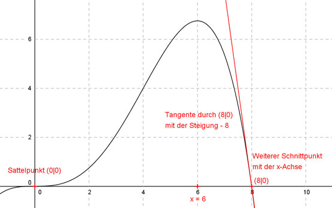

Aufgabe 87 Der Graph einer ganzrationalen Funktion 4. Grades hat im Wendepunkt (0|0) und an der Stelle x = 6 waagerechte Tangenten und schneidet die x-Achse an einer weiteren Stelle mit der Steigung -8. Wie lautet seine Funktionsgleichung?  Allgemeine Form einer ganzrationalen Funktion 4. Grades: f(x) = ax4 + bx3 + cx2 + dx + e f’(x) = 4ax3 + 3bx2 + 2cx + d f’’(x) = 12ax2 + 6bx + 2c 5 Bedingungen: 1. Hat im Wendepunkt (0|0) bedeutet zum einen: f(0) = 0 --> a * 04 + b * 03 + c * 02 + d * 0 + e = 0 --> e = 0 2. Hat im Wendepunkt (0|0) bedeutet zum anderen: f’’(0) = 0 --> 12a * 02 + 6b * 0 + 2c = 0 --> 2c = 0 | :2 --> c = 0 3. Hat im Wendepunkt (0|0) eine waagerechte Tangente bedeutet: f’(0) = 0 --> 4a * 03 + 3b * 02 + 2c * 0 + d = 0 --> d = 0 4. Hat an der Stelle x = 6 eine waagerechte Tangente bedeutet: (c = 0 und d = 0 eingesetzt) f’(6) = 0 --> 4a * 63 + 3b * 62 = 0 --> 864a+ 72b = 0 |-864a --> 72b = - 864a |:72 864 b = - ------ = -8a 72 5. Schneidet die x-Achse mit der Steigung -8 bedeutet zum einen: (c = 0 und d = 0 und e = 0 eingesetzt) f’(x) = -8 4ax3 + 3bx2 = -8 (b = -8a eingesetzt) 4ax3 - 24ax2 = -8 a(4x3 - 24x2) = - 8 |:(4x3 - 24x2) -8 a = ------------- 4x3 - 24x2 5. Schneidet die x-Achse mit der Steigung -8 bedeutet zum anderen: f(x) = 0 --> -8 ax4 + bx3 = 0 (a = ------------- und b = -8a eingesetzt) 4x3 - 24x2 -8x4 -8 -------------- - 8x3 * ------------- = 0 | * (4x3 - 24x2) 4x3 - 24x2 4x3 - 24x2 -8x4 + 64x3 = 0 -x3(x - 8) = 0 --> 2 Fälle 1. Fall -x3 = 0 --> x1,2,3 = 0 Sattelpunkt 2. Fall (x - 8) = 0 --> x4 = 8 Somit (c = 0 und d = 0 eingesetzt) f’(8) = -8 --> 4a * 83 + 3b * 82 = -8 (b = -8a eingesetzt) 2048a + 3 * (- 8a) * 64 = -8 2048a - 1536a = -8 512a = -8 |:512 8 1 a = - ----- = - ---- 512 64 1 1 b = -8a = -8 * (- ---- ) = --- = 0,125 64 8 Gesuchte Funktionsgleichung: f(x) = -(1/64)x4 + 0,125x3